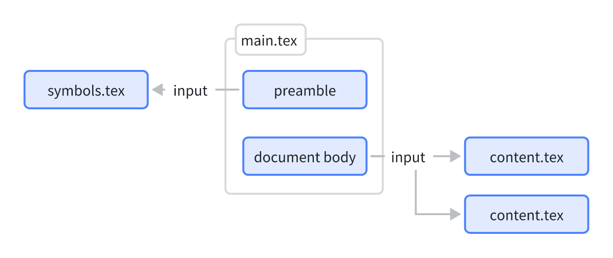
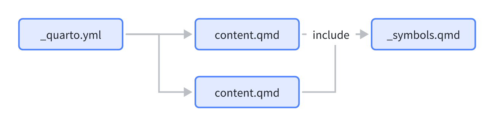
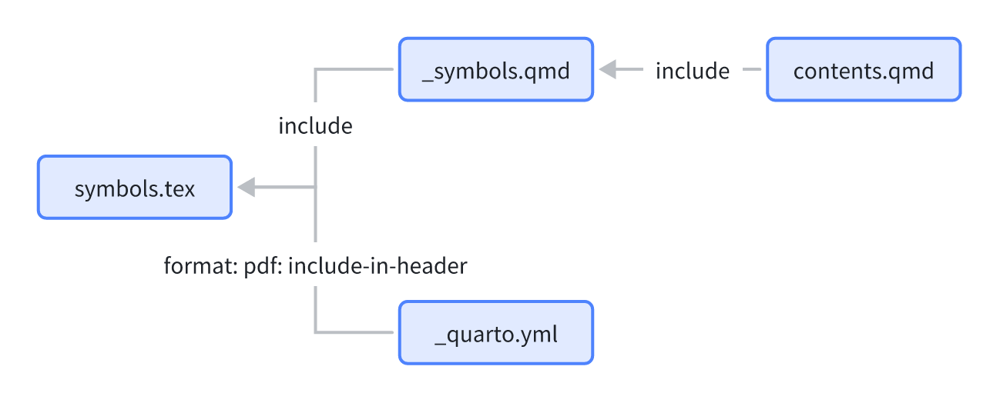
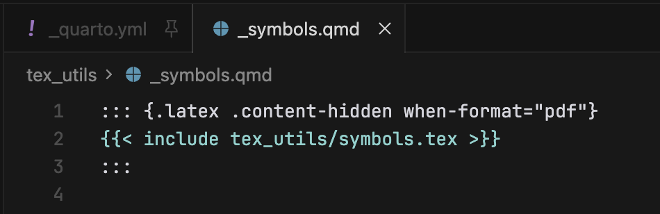
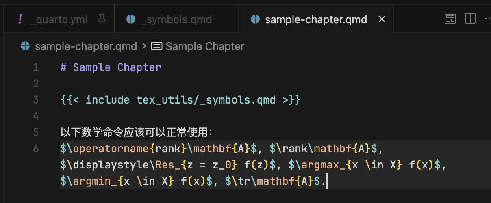
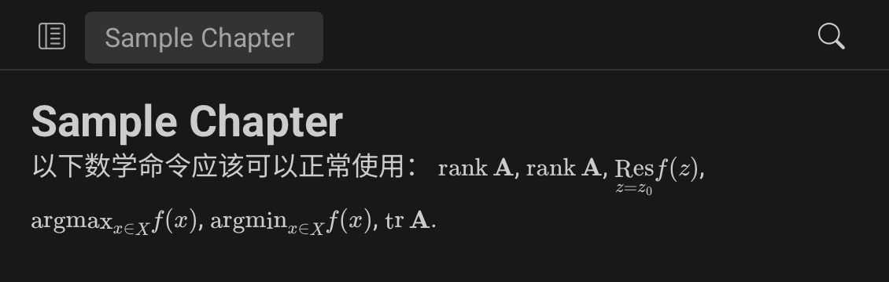
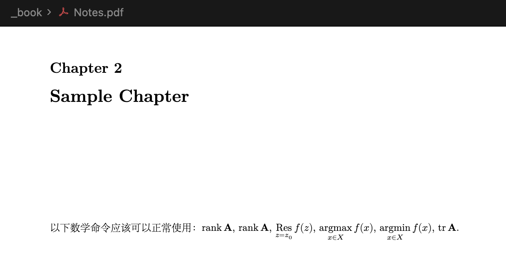

配置 LaTeX
本章节详细介绍了本项目中的 LaTeX 相关配置，包括 PDF 输出格式设置、文档类配置、页面布局、字体设置以及各种宏包的使用。这些设置确保了生成的 PDF 文档具有专业的外观和良好的排版效果。
PDF 输出格式配置
在 Quarto 项目的 _quarto.yml 配置文件中，通过 pdf 相关设置可以灵活地指定 PDF 输出的排版样式、文档类、页面尺寸和各种格式参数，从而实现专业而定制化的排版效果。
本项目使用 ctexbook 作为 PDF 输出的文档类，这是专门为中文文档设计的 LaTeX 文档类：
pdf:
documentclass: ctexbook
fontsize: 10pt
pdf-engine: xelatexctexbook- 专门为中文文档设计的 LaTeX 文档类，支持中文排版，自动处理中文字体、标点符号等。
fontsize: 10pt- 设置基础字体大小为 10 点，适合学术文档阅读。
xelatex-
使用
xelatex作为 PDF 生成引擎，xelatex对 Unicode 和现代字体支持更好，特别适合处理中文字符和自定义字体。
页面布局设置
项目配置了标准的 A4 页面尺寸和合适的边距：
geometry:
- paperwidth=210mm
- paperheight=297mm
- top=36.8mm
- bottom=31.8mm
- left=25.4mm
- right=25.4mm- 页面尺寸: 210mm × 297mm (A4 标准)
- 上边距: 36.8mm，为页眉和章节标题留出空间
- 下边距: 31.8mm，为页脚留出空间
- 左右边距: 25.4mm，确保文本不会过于靠近页面边缘
字体配置
在 _quarto.yml 文件的 pdf 配置中，include-in-header 用于向生成的 LaTeX 文档头部插入自定义的 LaTeX 代码片段。这些代码会在每次编译 PDF 时自动插入到 LaTeX 源文件的 \begin{document} 之前，常用于字体设置、引入额外的宏包、定义自定义命令或调整全局排版风格等。例如可以用它为整个文档设定等宽字体、插入自定义标题样式、统一公式渲染模式等配置。从而更灵活地微调最终输出文档的外观与功能。
include-in-header:
text: |
\setmonofont{JetBrains Mono}使用 JetBrains Mono 作为等宽字体，这是一个专为开发者设计的现代等宽字体，具有良好的可读性。你可以访问 https://www.jetbrains.com/lp/mono/ 了解更多关于 JetBrains Mono 的信息和下载该字体。
数学公式设置
include-in-header:
text: |
\everymath{\displaystyle}将所有行内数学公式显示为显示模式，使公式更加清晰。
自定义符号
在使用 LaTeX 编写文档时，时常会需要自定义一些符号，并在多个文件中使用它们，例如，把 \mathrm{i} 简化为 \im，可以极大提高代码的紧凑程度。在 LaTeX 中，这涉及到两个命令：
\newcommand{\im}{\mathrm{i}}
\renewcommand{\im}{\mathrm{i}}其中，第一个命令 \newcommand 用于定义新的命令，第二个命令 \renewcommand 用于重新定义已有的命令。需要注意的是，对已经定义过的命令进行重新定义时，需要使用 \renewcommand 命令，而不是 \newcommand 命令，否则将导致报错。也就是说，对于 LaTeX 代码，我们需要保证每一个自定义命令只调用一次 \newcommand 命令，所有后续更改都通过 \renewcommand 命令完成。
对于纯 LaTeX 项目来说，这两个命令已经足够使用，我们可以在文档的导言区中插入相关自定义命令的代码。后续所有正文章节中需要使用的 LaTeX 命令，都已经在导言区中被一次性导入了。

然而，在 Quarto 项目中，由于 MathJax 在 HTML 中是基于页面局部渲染的，不像 LaTeX 编译时拥有全局状态，所以每个页面都必须“看到”宏定义才能正确解析。也就是说，不同 .qmd 文件之间是相互独立的，对于每一个独立的 .qmd 文件，都需要 “导入” 一次已有的自定义命令代码，否则这些自定义命令不会被 MathJax 识别。因此，如果将自定义命令的配置代码放在 _symbols.qmd 文件中，则每一个需要用到这些命令的文件都需要使用 {{< include _symbols.qmd >}} 命令导入该文件，否则这些自定义命令不会被 MathJax 识别。

这就引出了矛盾：对于基于 LaTeX 的 PDF 输出来说，一次导入已经足够；但是对于 HTML 输出来说，第二次及其以后的导入都将对 “已经定义过的命令” 重新调用 \newcommand 命令，从而导致 PDF 输出端报错。也就是说，PDF 输出只需要导入一次，而 HTML 输出需要导入多次。
解决方案是，我们把针对两种输出的自定义命令代码分开配置，这需要使用 _quarto.yml 文件中的 include-in-header 配置项，以及 Quarto 的 .content-hidden 属性。

首先我们创建一个 symbols.tex 文件，在该文件中输入自定义命令有关的代码，例如：
\newcommand{\im}{\mathrm{i}}
\newcommand{\jm}{\im}
\newcommand{\rank}{\operatorname{rank}}
\DeclareMathOperator{\Res}{Res}
\DeclareMathOperator{\argmax}{argmax}
\DeclareMathOperator{\argmin}{argmin}
\DeclareMathOperator{\tr}{tr}
\renewcommand{\Re}{\operatorname{Re}}
\renewcommand{\Im}{\operatorname{Im}}然后在 _quarto.yml 文件中添加以下配置：
include-in-header:
text: |
\input{tex_utils/symbols.tex}这样，在 PDF 输出时，这些自定义命令就会被正确导入。
接下来我们对 HTML 输出进行配置，新建一个 _symbols.qmd 文件，在该文件中导入 symbols.tex 文件，并使用 .content-hidden 属性隐藏该文件的内容，设置这部分导入对 PDF 输出不可见：

上述代码中，.latex 表示这个块内的代码为 LaTeX 代码，.content-hidden when-format="pdf" 表示这部分代码不作用于 PDF 输出。
在后续使用中，在每一个需要使用这些自定义命令的 .qmd 章节文件中，导入 _symbols.qmd 文件：

预览效果与 PDF 输出效果分别如下，可以看到，自定义 LaTeX 命令在 PDF 输出和 HTML 输出中都能够正确识别。

